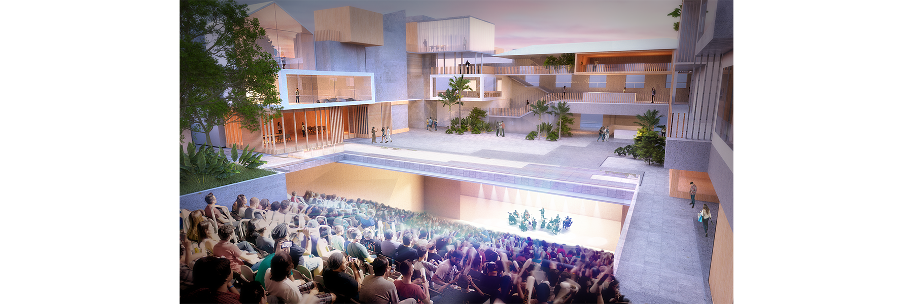
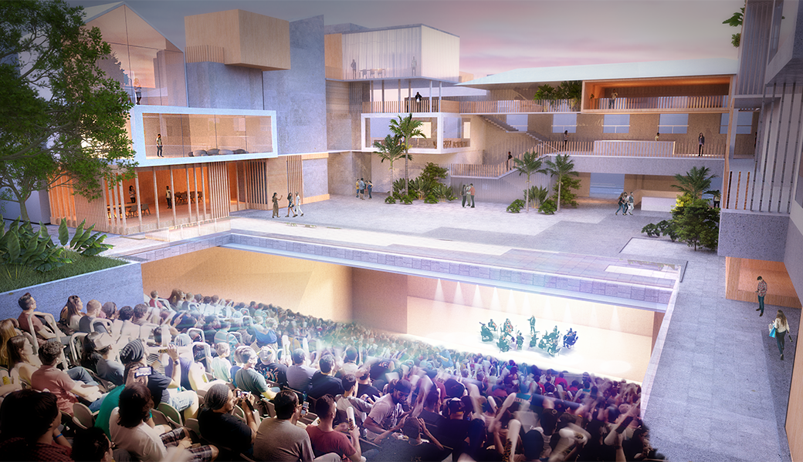
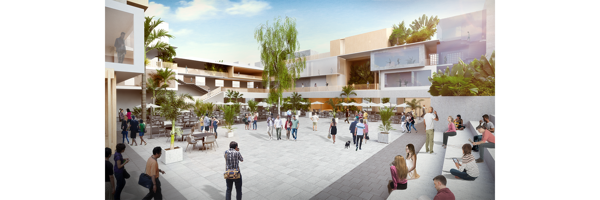
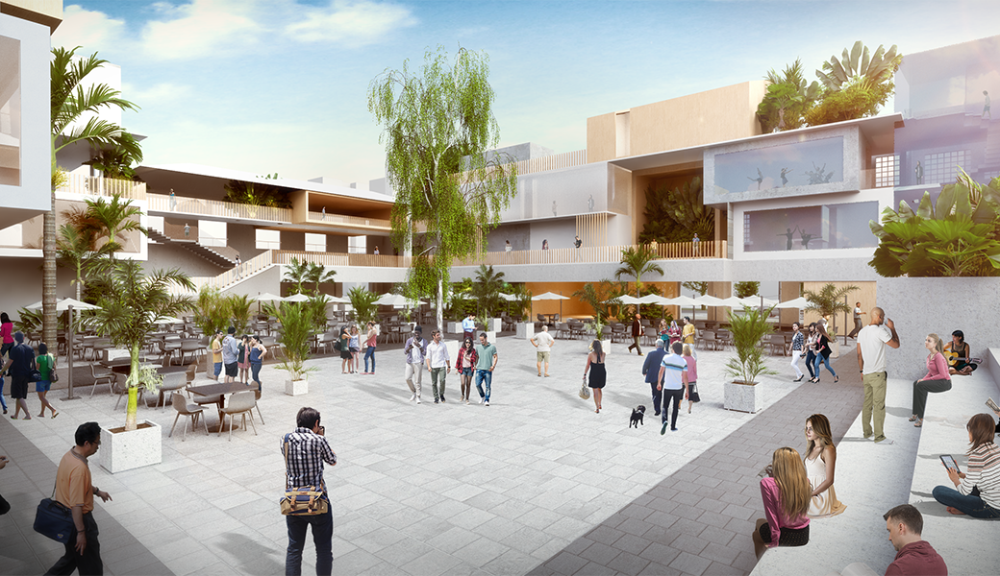
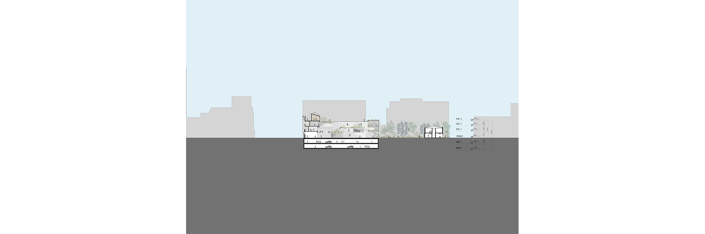
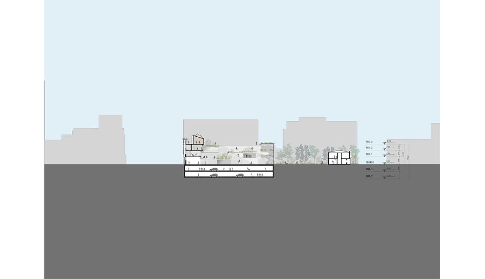
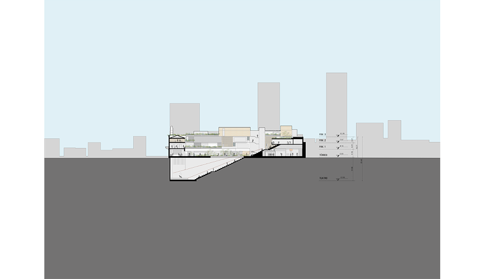
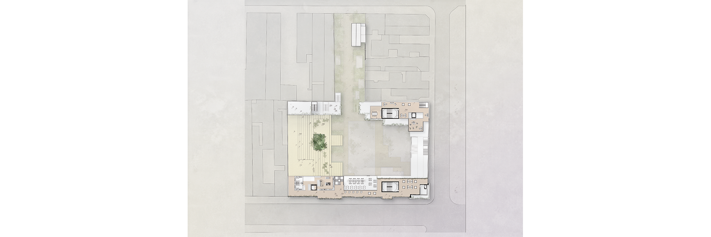
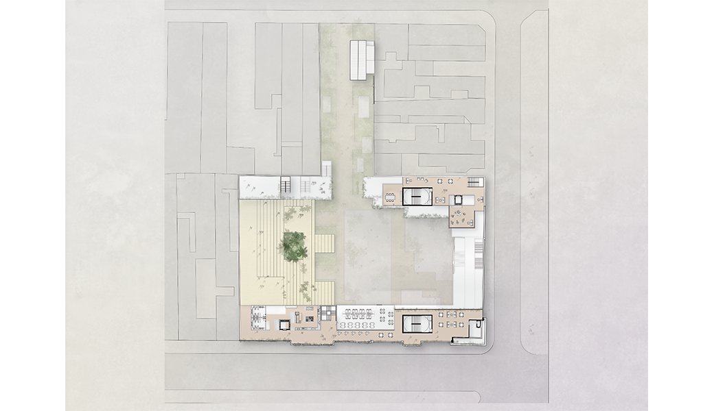
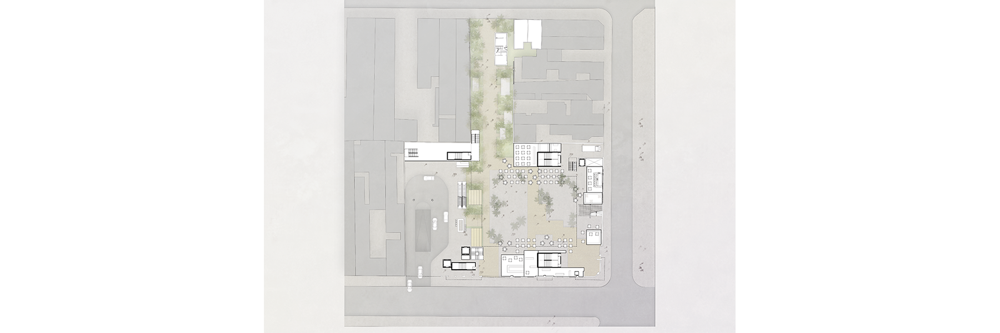
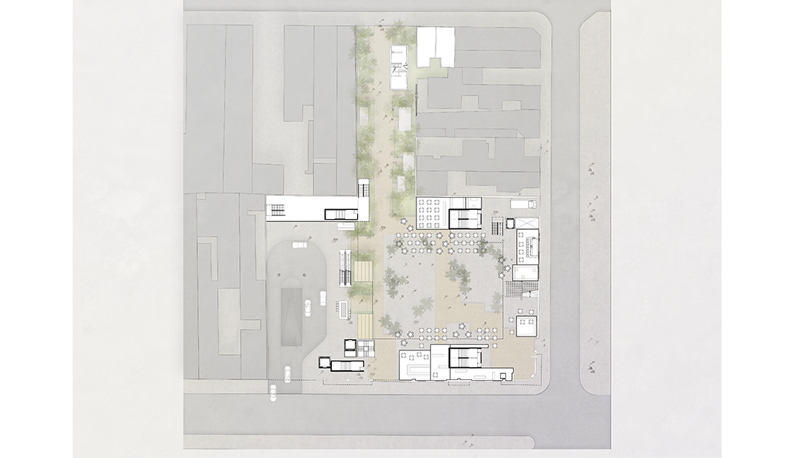
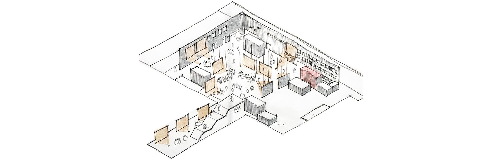
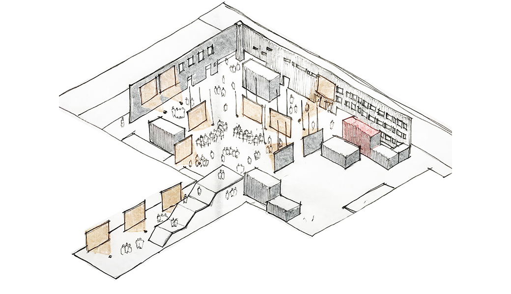
In this project, we needed to build a theater with over 2500 seats for the Bixiga neighborhood.
After changes in the company's management, it was requested that the size of the theater be reduced, which led the office to propose burying its structure. This would then create a huge square, which in turn would configure a more complex program. From the old theater emerged the idea of a cultural center - the Bixiga Cultural. The theater, now reduced, sits below an extensive central open space, fully traversable. The audience area can open up to the exterior and, combined with the bleachers of the square, become a continuous structure, ideal for open-air shows.
Surrounding this open area would be small volumes, boxes arranged to replicate (in terms of style) the eclectic style of the Bixiga's houses. These volumes would house music studios, bars, dance class rooms, sports practice areas, and shops, as well as extensive balconies. These would establish communication with the existing historical elements on our site without altering their characteristics.